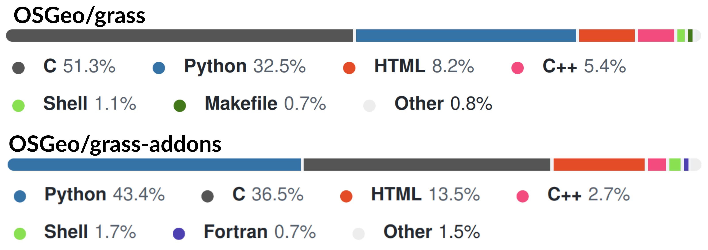
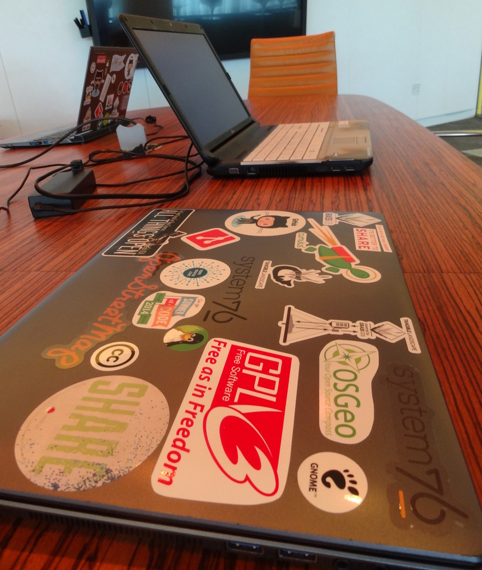
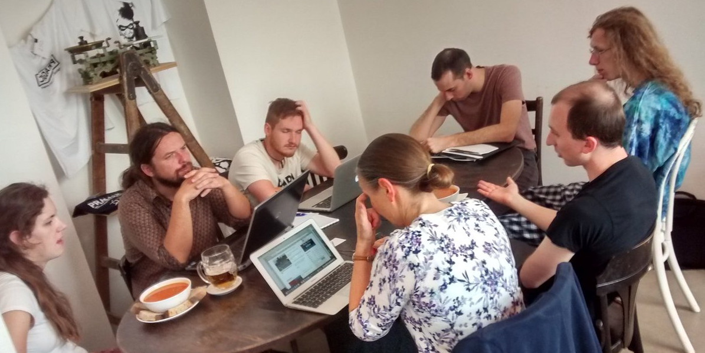
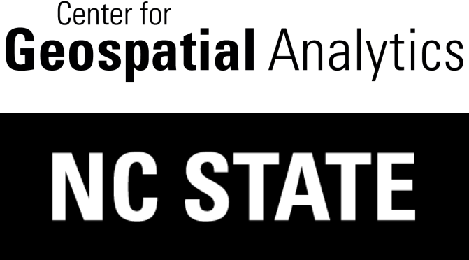

GRASS GIS Project Pitch
NCSU GeoForAll Lab
at the
Center for Geospatial Analytics
North Carolina State University

NCSU Cybersecurity Practicum
Raleigh, January 10, 2024
wenzeslaus.github.io/grass-gis-cybersecurity-practicum-pitch
Vaclav (Vashek) Petras

At the Center for Geospatial Analytics, we push the boundaries of geospatial data science to make discoveries and get important work done.
...through model development, skill-transfer, GRASS GIS development, ...
GRASS GIS
Mission: Bringing advanced geospatial technologies to the world
- Innovation with Stability & All-in-one Software Suite
Why We Use GRASS GIS?
- Big-data processing, including 2-4D array data support
- Tooling to build and long-term support of custom models

30 m urban growth across the US, 2020 to 2100 (16 billion pixels, 50 runs)
Development and Community
- Open-source (GNU GPL)
- User-driven
- Multiple companies and institutions
- Open Source Geospatial Foundation (OSGeo) Project
- 55 unique contributors in the last 2 years
- 2023 code sprint: 17 in-person participants, 10 institutions, 9 countries, 3 continents
Involvement at NC State
- 4 active code contributors
- 3 project steering committee members
- Lead institution on a National Science Foundation (NSF) grant to support project sustainability
Project and Code Structure
Development Centered Around GitHub
- Git
- PRs
- Issues
- Checks in GitHub Actions

Build Artifacts
- CI generates builds for Linux, macOS, Windows for testing
- Linux and FreeBSD: packages created by distributions
- macOS and Windows: installers created by members of the development team
- In-works: conda package
- Build tooling: GNU Autotools (migration to CMake started)
Tools Used for Code Quality
- Python code formatted by Black.
- Checked against Flake8.
- Some code checked with Pylint.
- C and C++ checked with high warnings with GCC and Clang (-Wall -Wextra).
Before Automated Code Quality Checks
- While there are good tools now, a lot of development happened before many of the current standards and automated tools existed.
- Disagreements about minor issues led to lack of any standard.
- Prime example: Manual formatting according to a standard is hard or impossible.

Another endless discussion about code formatting style
Security is Work In Progress
-
CodeQL
-
C and C++: 180 open issues
- Some are false positives for security, but show real issues.
- Some of the 251 closed issues may have been mistakenly closed as not relevant for a PR while relevant for the project.
- Python: 2 issues
-
C and C++: 180 open issues
- Bandit finds more, but will require custom configuration.
- Coverity Scan used in the past, but is not integrated into CI.
Practicum Project Goals
- Make the CI useful for detecting new security issues in PRs
- Avoid current issues surfacing in unrelated code changes
- Address the current issues (triage and/or fix)
- Apply the newly identified set of tools consistently to both code repositories
- Provide a guidelines on existing security issues and software security priorities for the whole project
- Stretch goal: manage security issues of the build new or existing artifacts
Everything Should Be Checks in the CI
- Whatever the desired code quality and security levels are, they should be enforced in the CI.
- Generated files should be generated in the CI.
- Fixing an issue or adding a new process should be connected to an update in CI.
Four Czechs are happy when their code passes checks
Explain Why You Ignore Warnings
For permanent ignores, include explanation.
Example: Pylint disable in a theoretical GUI application:
# Always show an error message window even when the code is broken.
# This avoids tracebacks appearing without context.
except Exception as error: # pylint: disable=broad-except
show_error_window(error)
Developers thinking hard what the code means
Contact
Email: vpetras@ncsu.edu
Twitter: vaclavpetras
LinkedIn: Vaclav Petras
Project repo: github.com/OSGeo/grass
Project website: grass.osgeo.org
wenzeslaus.github.io/grass-gis-cybersecurity-practicum-pitch wenzeslaus.github.io/code-quality-measures-foss4g-2022
